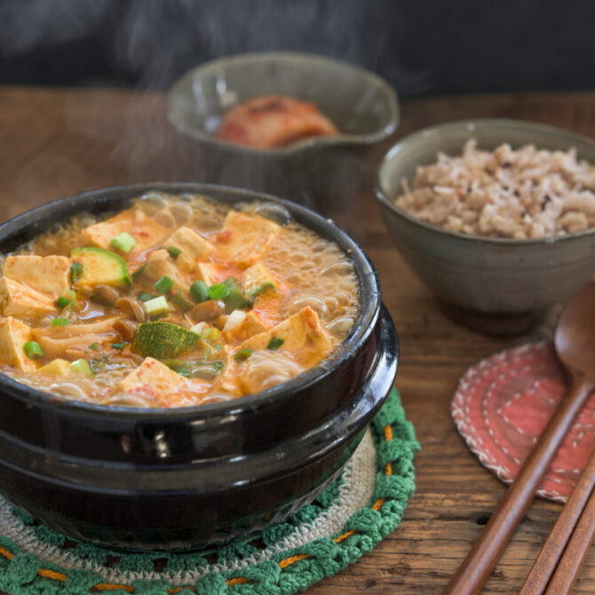

Shanghai-Style Braised Pork Belly
A classic pork dish from mainland China featuring pork belly and a combination of ginger, garlic, aromatic spices, chilies, sugar, star anise, light and dark soy sauce and rice wine.

A traditional Korean stew made from soybean paste with meat or seafood, tofu and vegtables of your choice such as zucchini, potatoes, onions and radishes.

A super simple and delicious side dish consisting of cucumbers tossed with a dressing made of soy sauce and rice vinegar that is easily customizable to tastes and what might be on hand.
:max_bytes(150000):strip_icc():format(webp)/mango-sticky-rice-dessert-3217361-hero-02-9858904a67e944ed9b1b7c7a588dac6a.jpg)
A traditional South / Southeast Asian dessert made with glutinous rice, fresh mango and coconut milk and eaten with a spoon or with the hands.